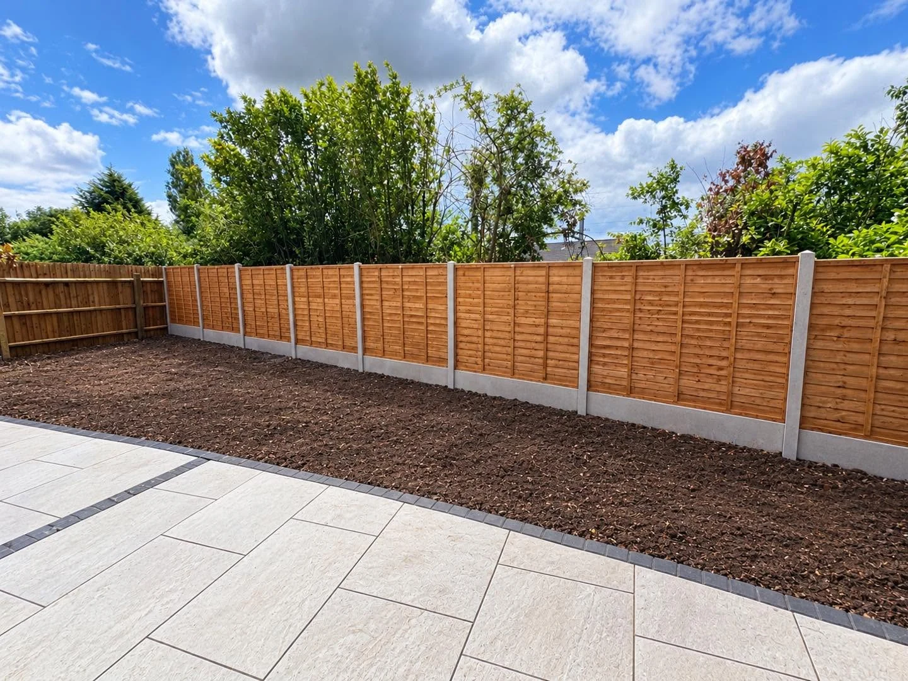
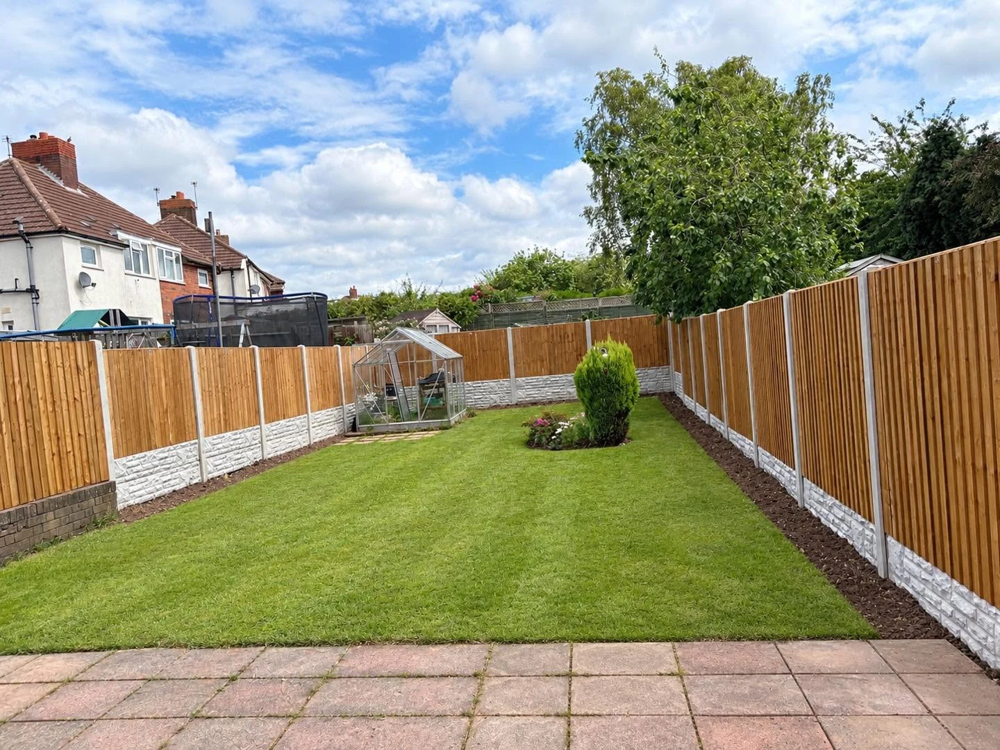
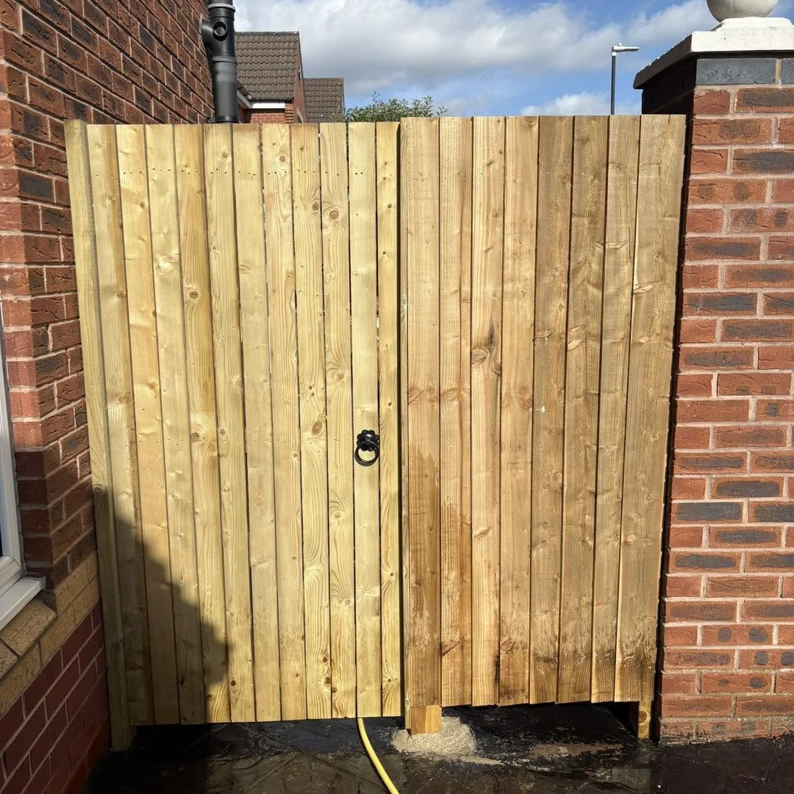

BROADHURST FENCING · WALSALL
Frame your garden.
Love your space.
Fencing, gates and garden boundaries, fitted with care. Based in Walsall and covering most areas across the West Midlands.
FENCING WITH PURPOSE
Good boundaries.
Better gardens.
Broadhurst Fencing is a fully insured fencing contractor based in Walsall, covering most areas across the West Midlands. From a new garden boundary to a made-to-fit gate, we offer a wide range of fencing and gate services. Get in touch for a free quote.
Request a free quote →
A FINISH THAT FITS
From the front gate
to the back garden.
Closeboard timber, contemporary screening and practical access. Explore the materials and details in our real project photographs.
Explore timber gates →

OUR PROJECTS
Boundaries with a better finish.
Explore our fencing and gate projects.
BEFORE WE BEGIN
Your fencing questions.
Where do you work?
We are based in Walsall and cover most areas across the West Midlands. Send your postcode to confirm coverage.
Are you insured?
Yes. Our fencing and gate services are fully insured.
Can I send photographs for a quote?
Yes. Use the form to prepare a WhatsApp enquiry, then attach photographs before sending. Include the approximate length and height you need.
Are quotations free?
Yes. Contact us for a free, no-obligation quote. Share your location, existing fence photographs and the style you have in mind.
FREE, NO-OBLIGATION QUOTE
Let’s talk about your fencing project.
Tell us what you have in mind. This form opens a WhatsApp draft with all your details, ready for you to review, add photos and send.